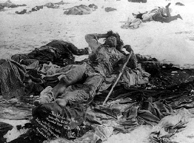

| Toxic smugness: Google the term "Backpfeifengesicht." |
Newt Gingrich, lapsed adulterer, impenitent warmonger, and self-appointed
“teacher of civilization,” has excommunicated Ron
Paul and his supporters from the ranks of human decency. A similar anathema has
been pronounced by left-wing
heresy hunter David Neiwert -- a former sidekick to the degenerate fraud
named Morris Dees – and many other self-appointed political “watchdogs.”
Those banishment decrees condemn Dr. Paul and his supporters for
rejecting the fundamental tenet of statism – the belief that officially
sanctioned lethal coercion is the key to social progress.
"I think Ron Paul's views are totally outside the
mainstream of virtually every decent American," insisted Gingrich in a CNN
interview. Although Gingrich alluded to the manufactured controversy over
decades-old newsletters published by Dr. Paul that contained supposedly
offensive material dealing with matters of political correctness, Gingrich’s
chief complaint – which he has reiterated on many occasions – is that Dr.
Paul seeks to end America’s interventionist foreign policy and the God-awful wars that policy entails.
Gingrich has also dismissed Dr. Paul’s constituency as being
limited to “people
who want to legalize drugs.” Unlike Gingrich – who used government-proscribed canabinoids as a
young adult – Ron Paul has never used such illicit substances nor condoned their non-medical use, while
understanding that no government has the moral right to punish individuals who consume them as they see fit. In 1988 – at a time when, according to Gingrich and
other detractors, Paul was peddling racist propaganda – Dr.
Paul was denouncing the racist roots of the so-called War on Drugs. Gingrich,
on the other hand, has endorsed
the execution of first-time drug
offenders who possess trivial amounts of narcotics.
For Gingrich and the dominant militarist wing of the GOP, it
is rank indecency to oppose the mass murder of foreigners through aggressive
war overseas, and to leave individuals free to choose what mood-altering substances they consume, if any. For “Progressives” of Neiwert’s ilk, it is similarly uncivilized to
treat Americans as adults capable of managing their own affairs, and choosing their
own associations, free from the directives of bureaucrats and social engineers
whose mandates are backed by the threat of deadly force.
Neiwert volubly disapproved of foreign war when George
W. Bush was in power, but found other things to complain about once Obama
ascended to the Imperial Purple. A deeper problem than such facile and predictable
hypocrisy is the insistence – which Neiwert shares with many other figures on
the academic Left -- that war and military occupation are morally superior to
peaceful, market-centered action in dealing with institutionalized bigotry.
“The hand-wringing about whether Paul is a racist or not
really is beside the point,” declared
Neiwert in a typically sanctimonious outpouring. “Labels really become
inconsequential when the real issue is how their politics would play out on the
ground if they achieved power.” He denounces a supposed “monstrous bind spot in
libertarianism – namely, their apparent belief that the only element of
American political life capable of depriving Americans of their rights is the
government….”
Actually, the core libertarian tenet is the non-aggression
axiom (an application of the Golden Rule), which recognizes that it is an
unalloyed wrong for anybody to commit
aggressive violence against the person or property of another human being. Libertarians
do not exempt private actors from that principle. We refuse to exempt the
government from it, as well – and this is what is deemed unacceptable by collectivists
of Neiwert’s ilk, who believe that all good things in life begin with
officially sanctioned coercion.
Consider, for example, Neiwert’s claim that it was
libertarian-leaning conservatives (or their philosophical ancestors) in the
aftermath of the War Between the States, who “led the resistance to
Reconstruction that overturned the verdict of the war….”
Neiwert’s use of the term “verdict” in this fashion
resonates with the view expressed by Thrasymachus,
the notorious sophist depicted in Plato’s Republic
– namely, that “in all states there is the same principle of
justice, which is the interest of the government; and as the
government must be supposed to have power, the only reasonable
conclusion is, that everywhere there is one principle of justice,
which is the interest of the stronger.”
In Neiwert’s moral universe, only incorrigibly hateful
people question “verdicts” imposed through mass slaughter and property
destruction.
The “Reconstruction,” it must be remembered, was an
undisguised military occupation of the conquered South, in which “wholesale
corruption, intimidation of new voters by the thousands and tens of thousands,
political assassinations, riots, [and] revolutions … were the order of the day,”
as Dr. Paul Leland Haworth wrote in his
1912 study Reconstruction and Union,
1865-1912.
The objective that inspired Reconstruction
was not a vision of civic
equality, but rather a desire to destroy the troublesome Southern aristocracy, which
was seen as an impediment to the designs of the Northern corporatist elite.
“I was satisfied, and have been
all the time, that the problem of war consists in the awful fact that the
present class of men who rule the South must be killed outright rather than in
the conquest of territory,” wrote General Sherman to his wife (in a letter
quoted in Victor
Davis Hanson’s book The Soul of Battle). In what Hanson approvingly
called Sherman’s war of “terror” against the South, the General warned that
those who refused to display a properly submissive posture would be “crushed
like flies on a wheel.”
 |
| "Good Indians," by Sherman's definition, at Wounded Knee. |
Sherman, and his fellow state
terrorist Philip Sheridan, would follow the same approach in dealing with the
Plains Indians, who also had the temerity to claim a measure of independence from
the supposed authority of the Central Government. Neiwert, interestingly,
addresses that horrifying historican episode in his recent book The
Eliminationists: How Hate Talk Radicalized the American Right.
In a chapter dealing with "Eliminationism in America,”
Neiwert describes some of the atrocities committed against the Plains Indians
by U.S. military forces commanded by Sheridan and Sherman. He then devotes
the rest of the book to ritual execration of "neo-Confederates." That category must include anybody who understands that war to reclaim and “reconstruct”
the South was a bloody prelude to the slaughter of the Plains Indians, the
imperial war of conquest in the Philippines, and contemporary campaigns of
humanitarian bloodshed that have blessed the lives of “people of color” in such
places as Iraq and Afghanistan.
Neiwert, who is consistently oblivious to the implications
of his own research, also points out that the Ku Klux Klan’s early-20th
Century revival began when it was embraced by local governments (including some
in the Midwest) as "an auxiliary police outfit" to enforce laws
against bootlegging. The Klan, of course, is the marquee hate group that has
served as such a profitable foil for Neiwert’s mentor, Morris Dees – and it’s
quite possible that group would have disappeared permanently had it not become
a government sub-contractor in the first War on Drugs.
This brings up a very important point: If Morris Dees and
his comrades at the SPLC are genuinely agitated over institutionalized
discrimination, why have they never publicly uttered a syllable of condemnation
for the patently racist “War on Drugs”?
One possibility is suggested by the fact that the
contemporary SPLC, like the Ku Klux Klan of roughly a century ago, is a
quasi-private adjunct to law
enforcement agencies that profit extravagantly from Prohibition. Dees is
too canny and cynical to disturb that lucrative arrangement by protesting about
the costs inflicted by Prohibition in terms of the lives and liberties of black
and Hispanic Americans. After all, complaints of that kind are the sort of
thing one hears from indecent, irresponsible extremists like Ron Paul.
David Neiwert and other self-anointed custodians of social
justice insist that Ron Paul and his supporters have somehow inherited the sins of bigoted people who
died long before they were born, and prospectively share the guilt of those who
might do horrible things if federal power were curtailed. Meanwhile, the
president supported by Neiwert and his ideological kin is massacring innocent “people of color” in at least
three countries, and escalating a domestic Drug War that is rife with racial
profiling and racial disparities in sentencing guidelines.
The mass slaughter of brown people abroad, and mass
incarceration of brown people at home, are a price Neiwert and his ilk are
willing to pay to preserve a system that can regiment societal arrangements to
their liking. In that system, as Neiwert candidly admits, social “verdicts” are
imposed and upheld through state-licensed murder, rather than achieved through peaceful
cooperation.
Professor George P. Fletcher of Columbia Law School provides an incisive description of the ideological foundation of that system in his valuable book The Secret Constitution.
Fletcher, an
unabashed Marxist, is difficult to dismiss as a “neo-Confederate,” yet he
agrees with the revisionist view that the war waged by the North was not an
effort to "preserve the Union," to emancipate the slaves, or (as
Lincoln absurdly claimed) a crusade to restore the pre-war constitutional
order. Instead, that war was intended to consolidate a confederation of states
into a unitary regime governed by what Fletcher calls a "New Constitutional
Order." The founding premise of that New Order is that "the federal
government, victorious in warfare, must continue its aggressive intervention
in the lives of its citizens." (Emphasis added.) That "aggressive intervention" inescapably involves the threat -- and, increasingly, the exercise -- of deadly force.
Newt Gingrich and David Neiwert -- and the ideological cliques they represent -- disagree about a great deal,
but they agree that “decency” in political affairs is measured by one’s willingness
to support State-sanctioned murder as the central organizing principle of
society.
Once again, thank you!
My family and I wish to express our continued gratitude for the generous support so many of you have offered to Pro Libertate. This means more to us that we can adequately express. God bless you all.
On another matter: I have been curating the news blog for Republic magazine; please pay that site a visit, and -- if it meets with your approval -- spread the word.

Be sure to check out Republic magazine!
Dum spiro, pugno!